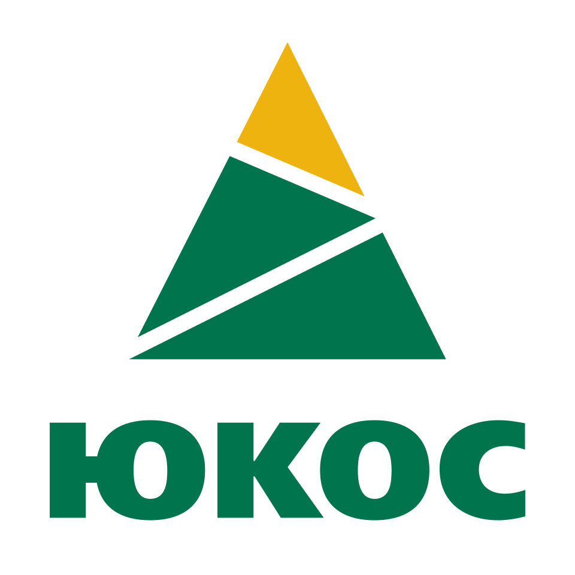

유코스 Yukos
유코스(Yukos)는 러시아의 산업 석유 및 가스 회사로 본사는 모스크바에 있었다. 이 기업은 한때 러시아 최대의 민간 기업이었으나 2006년 사태와 관련해 파산했다.
최종 업데이트

유코스는 어떤 브랜드인가
유코스는 한때 러시아 최대의 민간 기업이자 석유 회사로 불렸다. 이 기업은 2003년에 러시아 최대의 석유 회사로 성장했으며, 2002년 말 기준으로 종업원 10만 명과 상당한 매출액을 기록했다.
또한 러시아 최초로 국제회계기준을 도입하는 등 서방 투자자들에게 가장 투명한 기업으로 인정받았다. 그러나 2003년 경영자 기소로 시작된 사태 이후 대규모 세금 추징과 핵심 자회사 매각을 겪었다.
결국 2006년 완전히 파산하며 러시아 석유 산업에 큰 부작용을 남겼다.
유코스는 어떻게 시작되고 성장했나
유코스는 1993년 4월 15일 러시아의 국영 회사들을 통합해 설립된 국영 회사이다. 이후 1995년 메나테프 은행의 미하일 호도르콥스키에게 매각되면서 민영화되었다.
이 기업은 지속적인 인수 및 합병을 통해 2002년 리투아니아 제1의 석유회사를 인수하는 등 규모를 확장했다. 2003년에는 러시아 최대의 석유 회사로 성장하며 전 세계 석유 생산량의 일부를 담당했다.
유코스의 브랜드 아이덴티티는 무엇인가
유코스는 한때 러시아 최대의 민간 석유 회사였으나, 정치적 사건과 대규모 세금 추징으로 파산에 이른 이례적인 역사를 가진 브랜드이다.
유코스의 대표 제품과 서비스는 무엇인가
유코스는 산업 석유 및 가스를 주요 생산 품목으로 하는 회사였다. 이 기업은 2002년 말 기준으로 생산 및 정유 회사 자회사 각 5개를 운영했으며, 판매 자회사 12개를 통해 유통망을 구축했다.
당시 유코스의 하루 석유 생산량은 160억 배럴에 달했으며, 이는 러시아 전체 석유 생산량의 20%를 차지하는 규모였다.
유코스는 지금 어떤 상태인가
유코스는 2006년 8월 1일 완전히 파산하여 현재는 존재하지 않는다. 경영 공백, 추징금 부과, 핵심 자회사의 헐값 매각이라는 복합적인 문제로 인해 해체되었다.
남은 회사들은 석유 재벌 로만 아브라모비치의 시브네프트에 인수되었다.
유코스 로고는 어떻게 변해왔나
자주 묻는 질문
유코스는 어느 나라 브랜드인가요?
유코스는 러시아의 기술·전자 브랜드입니다.
유코스는 언제 설립되었나요?
유코스는 1993년 설립되었습니다.
유코스의 브랜드 아이덴티티는 무엇인가요?
유코스는 한때 러시아 최대의 민간 석유 회사였으나, 정치적 사건과 대규모 세금 추징으로 파산에 이른 이례적인 역사를 가진 브랜드이다.
유코스의 대표 제품은 무엇인가요?
유코스는 산업 석유 및 가스를 주요 생산 품목으로 하는 회사였다.
유코스는 어느 기업이 소유하고 있나요?
유코스는 2006년 8월 1일 완전히 파산하여 현재는 존재하지 않는다.
유코스의 창업자는 누구인가요?
유코스의 창업자는 미하일 호도르콥스키입니다(위키데이터 기준).
유코스의 본사는 어디에 있나요?
유코스의 본사는 모스크바에 있습니다(위키데이터 기준).
출처와 검증
유코스 관련 참고: 위키데이터 Q835692 · 한국어 위키백과 · 영어 위키백과. 브랜드명은 한글과 원어를 함께 표기하되 데이터에 없는 표기는 만들지 않습니다. 기원 국가·설립연도는 검수된 정의문에서 확인된 값을 우선하고, 없을 때만 공식 웹사이트 URL이 일치하는 위키데이터 개체의 값을 씁니다. 위키데이터 값은 2026-09-12 기준입니다.